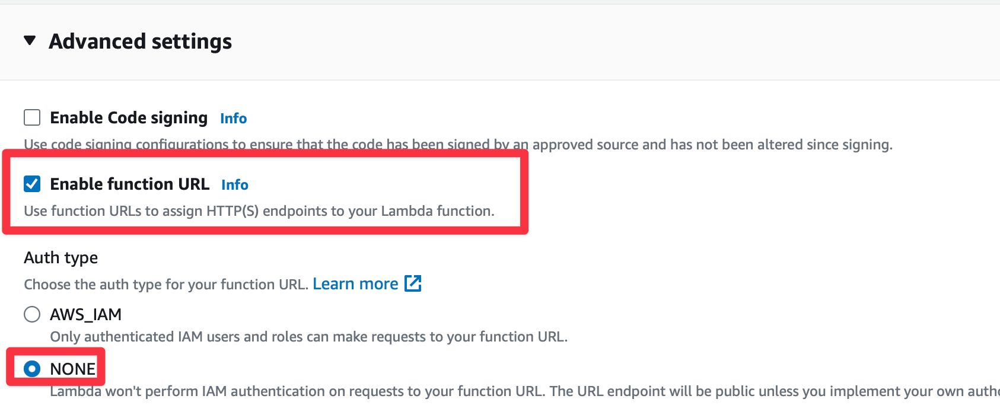
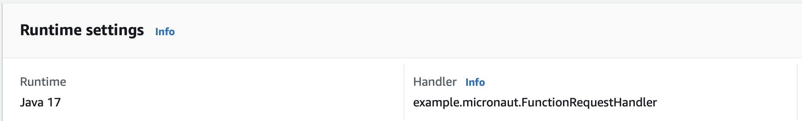
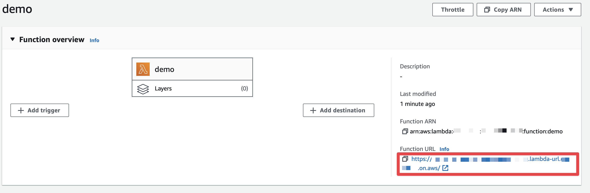

AWS Lambda Function URL and a Micronaut function
Deploy a Micronaut function to AWS Lambda Java 17 runtime and invoke it with a Lambda function URL.
On this guide
In this section
In this guide, we will deploy a Micronaut serverless function to AWS Lambda Java 17 runtime and invoke it with a Lambda function URL.
Getting Started
In this guide, we will create a Micronaut application written in Kotlin.
What you will need
To complete this guide, you will need the following:
-
Some time on your hands
-
A decent text editor or IDE (e.g. IntelliJ IDEA)
-
JDK 21 or greater installed with
JAVA_HOMEconfigured appropriately
Solution
We recommend that you follow the instructions in the next sections and create the application step by step. However, you can go right to the completed example.
-
Download and unzip the source
Writing the Application
Create an application using the Micronaut Command Line Interface or with Micronaut Launch.
mn create-function-app example.micronaut.micronautguide --features=aws-lambda --build=maven --lang=kotlin
If you don’t specify the --build argument, Gradle with the Kotlin DSL is used as the build tool. If you don’t specify the --lang argument, Java is used as the language.If you don’t specify the --test argument, JUnit is used for Java and Kotlin, and Spock is used for Groovy.
|
If you use Micronaut Launch, select serverless function as application type and add the aws-lambda and aws-lambda-function-url features.
The previous command creates a Micronaut application with the default package example.micronaut in a directory named micronautguide.
Handler
Create a class extending MicronautRequestHandler and define input and output types.
package example.micronaut
import io.micronaut.function.aws.MicronautRequestHandler
import java.io.IOException
import io.micronaut.json.JsonMapper
import com.amazonaws.services.lambda.runtime.events.APIGatewayProxyRequestEvent
import com.amazonaws.services.lambda.runtime.events.APIGatewayProxyResponseEvent
import jakarta.inject.Inject
class FunctionRequestHandler : MicronautRequestHandler<APIGatewayProxyRequestEvent, APIGatewayProxyResponseEvent>() {
@Inject
lateinit var objectMapper: JsonMapper
override fun execute(input: APIGatewayProxyRequestEvent): APIGatewayProxyResponseEvent =
APIGatewayProxyResponseEvent().apply {
try {
val json = String(objectMapper.writeValueAsBytes(mapOf("message" to "Hello World")))
statusCode = 200
body = json
} catch (e: IOException) {
statusCode = 500
}
}
}Handler Test
Write a test that verifies the function behavior:
package example.micronaut
import com.amazonaws.services.lambda.runtime.events.APIGatewayProxyRequestEvent
import org.junit.jupiter.api.Assertions.assertEquals
import org.junit.jupiter.api.Test
class FunctionRequestHandlerTest {
@Test
fun testHandler() {
val handler = FunctionRequestHandler()
val request = APIGatewayProxyRequestEvent()
request.httpMethod = "GET"
request.path = "/"
val response = handler.execute(request)
assertEquals(200, response.statusCode.toInt())
assertEquals("{\"message\":\"Hello World\"}", response.body)
handler.close()
}
}-
When you instantiate the Handler, the application context starts.
-
Remember to close your application context when you end your test. You can use your handler to obtain it.
-
Invoke the
executemethod of the handler.
Testing the Application
To run the tests:
./mvnw testLambda
Create a Lambda Function. As a runtime, select Java 17, Java 21, or Java 25.

Enable function URLs and set Auth Type as NONE.

Upload Code
Create an executable jar including all dependencies:
./mvnw packageUpload it:

Handler
As Handler, set:
example.micronaut.FunctionRequestHandler

Obtain the Function URL
You can obtain the Function URL in the AWS Console:

Invoke it, via a cURL command:
% curl -i https://xxxxxxxx.lambda-url.xxxx.on.aws/
{"message":"Hello World"}Next Steps
Explore more features with Micronaut Guides.
Read more about:
Help with the Micronaut Framework
The Micronaut Foundation sponsored the creation of this Guide. A variety of consulting and support services are available.
License
| All guides are released with an Apache License 2.0 for the code and a Creative Commons Attribution 4.0 license for the writing and media (images). |